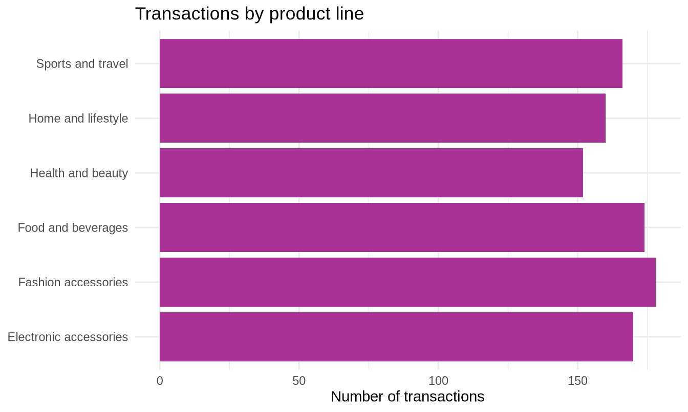
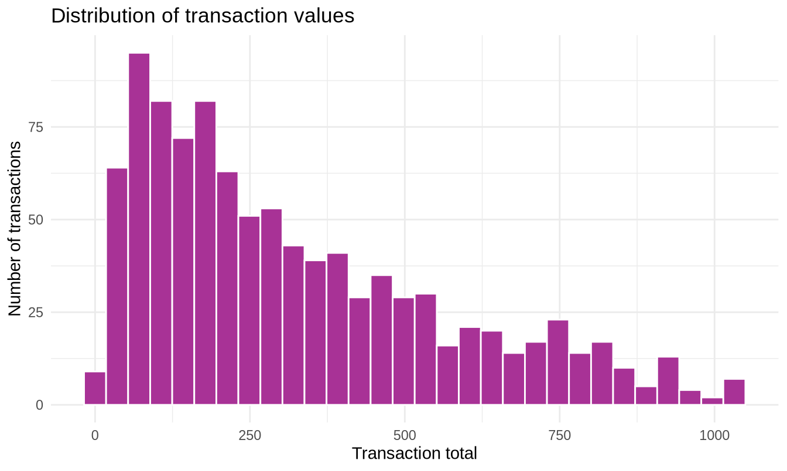
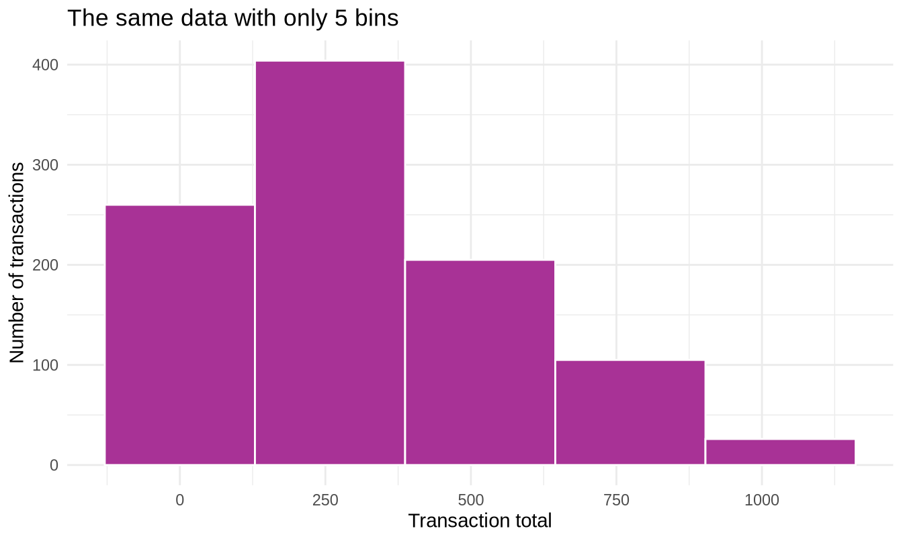
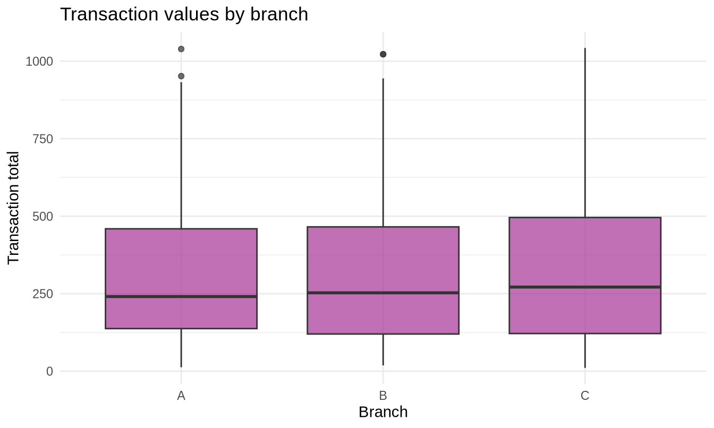
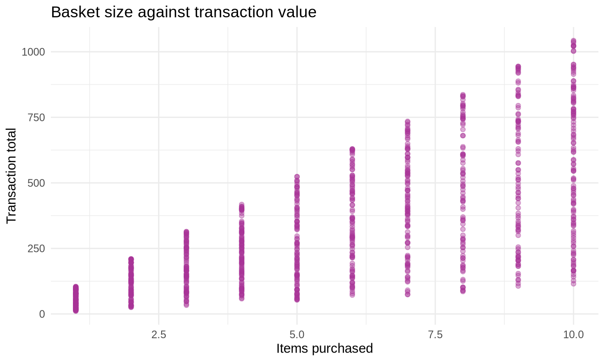
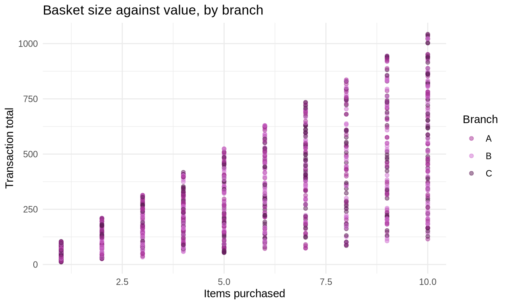
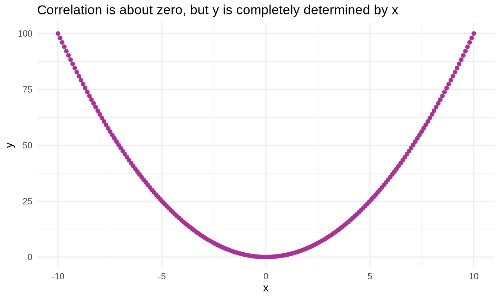
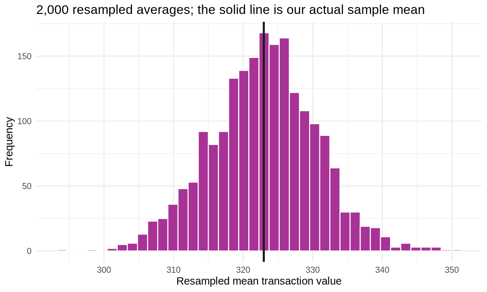

A reminder of the business situation. This is a supermarket chain with three branches. Each of the 1,000 rows is one transaction: what was bought, by whom, how much was paid, and what rating the customer left afterwards.
Throughout, keep asking the question a manager would ask: so what? A number that does not change a decision is not worth calculating.
1. Levels of measurement
Before calculating anything, you must know what kind of variable you are holding. This is not box-ticking - it determines which calculations are meaningful and which are nonsense.
Level
What it does
Can you…?
Example here
Nominal
Names categories
Count them. Nothing else.
Branch, Gender, Payment
Ordinal
Categories with a rank order
Also order them. Gaps are not equal.
A scale from Poor to Excellent
Interval
Equal gaps, no true zero
Also subtract. Ratios are meaningless.
Rating, Date
Ratio
Has a true zero
Also divide. Ratios are meaningful.
Total, Quantity, Unit price
The test separating interval from ratio is whether zero means “none of it”. A Total of 0 means no money changed hands, so it is ratio, and one sale can sensibly be twice as large as another. A Rating of 0 does not mean “no satisfaction” - it is just the bottom of a scale someone invented - so a rating of 8 is not “twice as satisfied” as a 4.
R enforces some of this for you:
mean(sales$Branch)
#> Warning in mean.default(sales$Branch): argument is not numeric or logical:
#> returning NA
#> [1] NA
R returns NA and warns that the argument is not numeric. That warning is R protecting you: the average of “A”, “B” and “C” does not exist.
WarningThe computer checks types; you check sense
R will not protect you from averaging something numeric that should not be averaged. If a variable were coded 1 = Cash, 2 = Credit, 3 = Ewallet, R would happily report a mean of 2.03.
That number is meaningless, and only you can know it.
NoteSelf-check 1
A colleague reports that “average customer type is 1.6” after coding Member as 1 and Normal as 2. What has gone wrong, and what should they have reported instead?
NoteShow the answer
Customer type is nominal. The numbers 1 and 2 are labels, not quantities - the choice of which group gets 1 was arbitrary, and reversing it would change the “average” to 1.4 without changing anything about the customers.
The correct summary is a count or a percentage: “60 percent of transactions were from Normal customers”. That statement survives relabelling; the average does not.
This mistake is common with survey data, where everything arrives as numbers regardless of what it actually measures.
2. Frequency tables
For a nominal variable, counting is the whole analysis.
sales |>count(Branch)
#> # A tibble: 3 × 2
#> Branch n
#> <chr> <int>
#> 1 A 340
#> 2 B 332
#> 3 C 328
Raw counts are hard to compare when groups differ in size, so convert to percentages:
#> # A tibble: 3 × 4
#> Branch Cash `Credit card` Ewallet
#> <chr> <int> <int> <int>
#> 1 A 110 104 126
#> 2 B 110 109 113
#> 3 C 124 98 106
pivot_wider() reshapes the long list into a grid, which is far easier to read.
Do the three branches have noticeably different payment habits? Eyeballing a difference is a fine first step. In section 3.3 you will learn the chi-square test, which tells you whether a difference this size could plausibly be chance.
Grouping a numeric variable into classes
Frequency tables also work on numeric data once you cut it into bands.
Notice how much information this throws away - 1,000 distinct values become five bands. It also introduces a choice: those boundaries were a judgement, and different boundaries would tell a slightly different story. Frequency tables for numeric data are a summary for presentation, not a basis for analysis.
NoteYour turn
Build a frequency table of Customer type with percentages.
A table of numbers is precise. A graph is persuasive. You need both.
Every graph in R follows the same three-part recipe:
ggplot(data, aes(...)) - which data, and which columns map to which visual property
+ geom_something() - what to draw
+ labs(...) - titles and axis labels
WarningPlus, not pipe
Inside ggplot(), layers join with +. Outside it, steps join with |>. The two are not interchangeable, and mixing them is near-universal in week one.
Bar chart - for categories
ggplot(sales, aes(x =`Product line`)) +geom_bar(fill ="#A83296") +labs(title ="Transactions by product line",x =NULL, y ="Number of transactions") +coord_flip() +theme_minimal()

coord_flip() turns the bars sideways. With long category names this is almost always right - rotated vertical labels are hard to read and look amateurish.
Histogram - for numeric data
ggplot(sales, aes(x = Total)) +geom_histogram(bins =30, fill ="#A83296", colour ="white") +labs(title ="Distribution of transaction values",x ="Transaction total", y ="Number of transactions") +theme_minimal()

The bin count is a real choice, not a detail. Change it and the story changes:
ggplot(sales, aes(x = Total)) +geom_histogram(bins =5, fill ="#A83296", colour ="white") +labs(title ="The same data with only 5 bins",x ="Transaction total", y ="Number of transactions") +theme_minimal()

With 5 bins the distribution looks smooth and unremarkable. With 60 it would look spiky. Neither is wrong, but neither is neutral. Always look at your data with two or three bin settings before deciding what it “looks like” - and be suspicious when someone shows you a histogram without saying how they binned it.
Boxplot - for comparing groups
ggplot(sales, aes(x = Branch, y = Total)) +geom_boxplot(fill ="#A83296", alpha =0.7) +labs(title ="Transaction values by branch",x ="Branch", y ="Transaction total") +theme_minimal()

A boxplot compresses a whole distribution into five numbers:
The thick line is the median - half the sales are above it
The box spans the middle 50 percent, from the 25th to the 75th percentile
The whiskers reach the most extreme values within 1.5 box-lengths of the box
Any dots beyond the whiskers are flagged as potential outliers
Boxplots are the fastest way to compare several groups at once. Look at whether the boxes overlap: heavily overlapping boxes mean the branches are more similar than different, whatever the exact averages say.
Scatterplot - for two numeric variables
ggplot(sales, aes(x = Quantity, y = Total)) +geom_point(colour ="#A83296", alpha =0.4) +labs(title ="Basket size against transaction value",x ="Items purchased", y ="Transaction total") +theme_minimal()

alpha = 0.4 makes each point semi-transparent, so where many points overlap the colour builds up. With 1,000 points this reveals density that solid dots hide.
Adding a third variable with colour
ggplot(sales, aes(x = Quantity, y = Total, colour = Branch)) +geom_point(alpha =0.5) +labs(title ="Basket size against value, by branch",x ="Items purchased", y ="Transaction total") +scale_colour_manual(values =c("#A83296", "#D070D0", "#5C1A54")) +theme_minimal()

NoteYour turn
Draw a histogram of Rating with 20 bins.
ggplot(sales, aes(x = ______)) +geom_histogram(bins = ____, fill ="#A83296", colour ="white") +labs(title ="Distribution of customer ratings",x ="Rating", y ="Number of customers") +theme_minimal()
Look at the result. Does it have the bell shape you might have expected, or something else? Hold that thought - section 7 comes back to it.
4. Measures of central tendency
Three ways to answer “what is typical?”, and they do not always agree.
Mean
mean(sales$Total)
#> [1] 322.9667
The arithmetic average. It uses every value, which is its strength, and it is dragged by extreme values, which is its weakness.
Median
median(sales$Total)
#> [1] 253.848
The middle value when everything is lined up in order. Half the transactions are above it and half below. It ignores how far away the extremes are, which makes it robust - resistant to outliers.
Mode
WarningThere is no mode() function for this
R does have a function called mode(), but it reports what type an object is - a completely different thing, and a genuine source of confusion.
For a categorical variable, the mode is the top row of a sorted count:
#> # A tibble: 1 × 2
#> `Product line` n
#> <chr> <int>
#> 1 Fashion accessories 178
For a continuous variable like Total, the mode is not useful - with 1,000 transactions recorded to two decimal places, almost every value appears once. The mode earns its place with categorical data and with discrete counts:
The mean sits above the median. That gap is not noise - it tells you the distribution has a longer tail on the high side. A few very large transactions pull the average up while the median stays put.
Here is why that matters commercially. If you report the mean as your “average transaction value” target, a handful of unusually large baskets can make performance look better than the typical customer experience actually is. The median answers a different and often more useful question: what does a normal shopping trip look like?
totals_with_error <-c(sales$Total, 500000) # one data entry errortibble(statistic =c("Mean", "Median"),original =c(mean(sales$Total), median(sales$Total)),with_typo =c(mean(totals_with_error), median(totals_with_error)))
#> # A tibble: 2 × 3
#> statistic original with_typo
#> <chr> <dbl> <dbl>
#> 1 Mean 323. 822.
#> 2 Median 254. 254.
One mistyped figure moves the mean noticeably. The median barely notices. When you suspect your data has errors - and real business data always does - the median is the safer summary.
NoteSelf-check 2
A property firm reports that the mean house price in a neighbourhood is 480,000 and the median is 310,000. What does that gap tell you, and which figure should a first-time buyer pay attention to?
NoteShow the answer
The mean sitting far above the median means the distribution is right-skewed: a small number of very expensive properties are pulling the average up, while most houses cluster much lower.
A first-time buyer should look at the median, and ideally the 25th percentile too. The median describes the house in the middle of the market. The mean describes a house that may not exist anywhere in the neighbourhood.
This is why property and income statistics are almost always reported as medians. Any time you see a mean quoted for something with a natural upper tail - salaries, house prices, insurance claims, transaction values - ask what the median is.
Two branches can have identical average sales and behave completely differently. The average tells you where the centre is; dispersion tells you how far things scatter around it.
This matters more than students expect. A supplier who delivers in 5 days on average, every time, is a completely different business partner from one who averages 5 days but ranges from 1 to 20.
Range
range(sales$Total)
#> [1] 10.6785 1042.6500
max(sales$Total) -min(sales$Total)
#> [1] 1031.972
Simple, and almost useless. It depends entirely on two values - the two most likely to be errors.
Variance and standard deviation
var(sales$Total)
#> [1] 60459.6
sd(sales$Total)
#> [1] 245.8853
The variance is the average squared distance from the mean. Squaring makes it work mathematically, but it also means the variance is in squared currency units, which nobody can interpret.
The standard deviation is its square root, which puts it back into the original units. That is why you almost always report the standard deviation and almost never the variance - though the variance reappears in section 3.3, where the squaring becomes genuinely useful.
Read the standard deviation as the typical distance a transaction sits from the average transaction.
Coefficient of variation
Which varies more - transaction totals, or customer ratings?
You cannot compare their standard deviations directly. One is currency running into the hundreds; the other is a 1-to-10 scale. The coefficient of variation expresses the standard deviation as a percentage of the mean, cancelling the units:
Now the comparison is fair. A higher CV means more relative variability.
The result is intuitive once you see it: ratings are constrained to a narrow 1-to-10 band and cluster near the middle, so they vary little in relative terms. Transaction totals can be almost anything, so they vary a great deal.
WarningWhen the CV is meaningless
The CV only works for ratio variables with a true zero and a positive mean. Applying it to temperatures in Celsius, or to a scale that could sit anywhere on the number line, produces a number with no interpretation.
#> # A tibble: 3 × 4
#> Branch mean_total sd_total cv_percent
#> <chr> <dbl> <dbl> <dbl>
#> 1 A 312. 232. 74.2
#> 2 B 320. 242. 75.8
#> 3 C 337. 263. 78.1
Two branches with similar means but different standard deviations are running different businesses. The one with lower spread has more predictable revenue, which makes staffing and stock planning easier - a real operational advantage the average completely hides.
NoteSelf-check 3
Two investment funds both returned 8 percent on average over ten years. Fund A had a standard deviation of 3 percent; Fund B, 19 percent. What does that tell you, and is one straightforwardly better?
NoteShow the answer
Fund A’s returns clustered tightly around 8 percent every year. Fund B’s swung wildly - it likely had years of large gains and years of heavy losses that happened to average out.
Neither is straightforwardly better, and that is the point. Fund B carries far more risk, which matters enormously if you might need the money at a bad moment, and matters less over a thirty-year horizon. An investor near retirement should strongly prefer A; a young investor might rationally accept B’s volatility.
In finance, the standard deviation of returns is the standard definition of risk. So this is not a case of the average being wrong - it is a case of the average answering only half the question.
6. Percentiles, quartiles and outliers
A percentile is the value below which a given percentage of the data falls. The 75th percentile is the value 75 percent of transactions come in under.
Those five numbers are the five-number summary, and they are exactly what a boxplot draws. The 25th, 50th and 75th percentiles are the first, second and third quartiles because they cut the data into four equal parts.
The 99th percentile is worth pausing on. It tells you what your top 1 percent of transactions look like - useful when deciding whether a “big spender” programme is worth running, and where to set its threshold.
The interquartile range
IQR(sales$Total)
#> [1] 346.9279
The IQR is the width of the middle 50 percent: Q3 minus Q1. Like the median it is robust - the extreme values that inflate the range and the standard deviation do not touch it.
#> # A tibble: 9 × 5
#> `Invoice ID` Branch `Product line` Quantity Total
#> <chr> <chr> <chr> <dbl> <dbl>
#> 1 860-79-0874 C Fashion accessories 10 1043.
#> 2 687-47-8271 A Fashion accessories 10 1039.
#> 3 283-26-5248 C Food and beverages 10 1034.
#> 4 751-41-9720 C Home and lifestyle 10 1024.
#> 5 303-96-2227 B Home and lifestyle 10 1022.
#> 6 744-16-7898 B Home and lifestyle 10 1022.
#> 7 271-88-8734 C Fashion accessories 10 1021.
#> 8 234-65-2137 C Home and lifestyle 10 1004.
#> 9 554-42-2417 C Sports and travel 10 1002.
What to do with an outlier
TipFlagging is not deleting
The 1.5 x IQR rule identifies unusual values. It does not identify wrong ones. Deleting points because a rule flagged them is one of the most common ways to quietly corrupt an analysis.
Work through three questions:
Is it possible? A transaction total of -50, or a customer age of 210, is an error. Investigate and correct or remove it.
Is it a different thing? A supermarket transaction of 30,000 might be a legitimate wholesale order that does not belong in an analysis of retail shoppers. Analyse it separately rather than deleting it.
Is it just large? Rich customers exist. A genuine, correctly recorded large sale is real data, and removing it because it is inconvenient is falsifying your results.
Only category 1 justifies deletion. Whatever you decide, write down what you did and why - an analysis where points vanished without explanation cannot be trusted by anyone, including you in six months.
NoteYour turn
Apply the same IQR outlier check to Rating. Before running it, predict how many outliers you will find.
moments::kurtosis() returns raw kurtosis, where a perfect normal distribution scores 3. Excel’s KURT() returns excess kurtosis, where a normal distribution scores 0 - it has already subtracted the 3.
To compare with an Excel result, subtract 3: kurtosis(sales$Total) - 3
Excel and moments also use slightly different sample corrections for skewness, so those figures differ in the second or third decimal place. The interpretation is unaffected, but do not be alarmed by a small discrepancy when checking your Excel work against your R work.
Q-Q plots - a better test of normality
Skewness and kurtosis compress the whole shape into two numbers. A Q-Q plot shows the entire comparison at once, plotting your data against what a perfect normal distribution would produce. If the data were normal, the points would sit on the diagonal line.
Points curving up at the right end - a heavy right tail, so right skew
Points curving away at both ends - heavier tails than normal
A distinct S-shape - lighter tails than normal
TipWhy this matters beyond section 2
Several tests in section 3.3 assume the data is roughly normal, and a Q-Q plot is the quickest honest way to check that before you rely on it.
Learning to read one now will save you from a confidently-reported wrong answer later.
NoteSelf-check 4
Why might a distribution of customer ratings on a 1-to-10 scale fail a normality check even when nothing is wrong with the data?
NoteShow the answer
Because it is bounded and discrete. A normal distribution runs from minus infinity to plus infinity and takes any value in between. A rating scale stops hard at its endpoints and only lands on a limited set of values.
That produces two visible effects on a Q-Q plot: a staircase pattern from the discreteness, and the ends bending away from the line because the data cannot run off to infinity the way the normal distribution expects.
The wider lesson: “not normal” is not the same as “bad data”. Ratings, counts, waiting times and proportions are all routinely non-normal for perfectly good structural reasons. The question is never “is this normal?” but “is this close enough to normal for the method I want to use?” - and section 3.3 gives you the tools to answer that properly.
8. Measures of association
So far, one variable at a time. Now: do two variables move together?
Covariance
cov(sales$Quantity, sales$Total)
#> [1] 507.141
Positive means they tend to rise together. But the size is uninterpretable - it depends on the units of both variables. Measure the total in fils instead of dinars and the covariance changes by a factor of a thousand while the relationship is identical.
Correlation
Correlation fixes this by standardising covariance onto a fixed scale from -1 to +1:
#> Unit price Quantity Total gross income Rating
#> Unit price 1.000 0.011 0.634 0.634 -0.009
#> Quantity 0.011 1.000 0.706 0.706 -0.016
#> Total 0.634 0.706 1.000 1.000 -0.036
#> gross income 0.634 0.706 1.000 1.000 -0.036
#> Rating -0.009 -0.016 -0.036 -0.036 1.000
Read across a row and down a column to find the correlation between any pair. The diagonal is 1 because every variable correlates perfectly with itself.
Two things here are worth noticing.
Some correlations are near-perfect by construction, not by discovery.Total and gross income are both calculated from the same underlying sale, so of course they move together. A correlation of 1.0 between two variables usually means one is a rescaled version of the other - arithmetic rather than insight.
Others are close to zero. Whatever drives customer satisfaction, basket size is not obviously it - itself a useful finding, and one a manager assuming “big spenders are happy customers” would want to know.
Correlation is not causation
A strong correlation permits exactly three explanations, and you cannot tell which from the correlation alone:
A causes B. Buying more items causes a higher total. True here, and known from the arithmetic, not from the correlation.
B causes A. The direction can easily run the other way.
Something else causes both. Ice cream sales correlate with drowning deaths. Neither causes the other; hot weather causes both. This is a confounding variable, and it is the usual explanation for surprising correlations.
There is a fourth possibility that is easy to forget: coincidence. Search enough pairs of variables and you will find strong correlations that mean nothing.
Correlation only sees straight lines
cor() measures linear association. A correlation near zero does not mean “no relationship” - it means “no straight-line relationship”.
ggplot(demo, aes(x = x, y = y)) +geom_point(colour ="#A83296") +labs(title ="Correlation is about zero, but y is completely determined by x",x ="x", y ="y") +theme_minimal()

The correlation is essentially zero. Yet y is perfectly predictable from x - you could not ask for a stronger relationship.
TipThe rule
Always plot the data before trusting a correlation coefficient. A single number cannot tell you the shape of a relationship, and it will not warn you when it has missed one.
NoteYour turn
Find the correlation between Unit price and Rating, then plot it to check the number is telling the truth.
cor(sales$`______`, sales$______)ggplot(sales, aes(x =`______`, y = ______)) +geom_point(colour ="#A83296", alpha =0.4) +labs(title ="Unit price against customer rating") +theme_minimal()
9. A look ahead - how sure are we?
Everything so far has described the 1,000 transactions in front of you. But nobody really cares about those 1,000 transactions. They care about the business those transactions came from.
The average transaction value you calculated is a fact about your sample. Collect a different 1,000 transactions next month and you will get a different number. So how much should you trust the one you have?
Here is a way to find out using nothing but the data itself. Take your 1,000 transactions, draw 1,000 of them at random with replacement, and compute the mean. Do it two thousand times.
That interval is where the true average transaction value plausibly sits.
tibble(boot_mean = boot_means) |>ggplot(aes(x = boot_mean)) +geom_histogram(bins =40, fill ="#A83296", colour ="white") +geom_vline(xintercept =mean(sales$Total),colour ="#1A1A1A", linewidth =1) +labs(title ="2,000 resampled averages; the solid line is our actual sample mean",x ="Resampled mean transaction value", y ="Frequency") +theme_minimal()

Two things about that histogram deserve attention.
It is narrow. Every resampled average lands close to the original, which tells you the sample mean is a stable, trustworthy estimate.
It is bell-shaped - even though the transaction totals themselves were clearly right-skewed. That is not a coincidence and not specific to this dataset. It is the Central Limit Theorem, which you meet properly in section 3.2, and it is the reason most of inferential statistics works at all.
You have just done statistical inference without a single formula. Section 3 shows you the formulas, and they will make more sense for having seen this first.
Your turn - full exercises
These have less scaffolding. Work them out from what is above.
Exercise 1 - Branch performance report. Produce one table showing, for each branch: number of transactions, total revenue, mean and median transaction value, standard deviation, and coefficient of variation. Sort by total revenue, highest first.
Exercise 2 - Product line profitability. Which product line generates the most total gross income? Is it also the one with the highest average gross income per transaction? Explain what a difference between those two answers would mean for the business.
# YOUR CODE HERE
Exercise 3 - Satisfaction by payment method. Compare the distribution of Rating across the three payment methods, using both a summary table and a boxplot. Do the differences look large enough to matter?
# YOUR CODE HERE
Exercise 4 - Shape investigation. Choose Unit price. Calculate its mean, median, skewness and kurtosis, then draw a histogram and a Q-Q plot. Write two or three sentences describing its shape and saying whether the mean or the median is the better summary.
# YOUR CODE HERE
Exercise 5 - A question of your own. Look at the columns available and ask a question this dataset can answer that has not been asked above. Answer it with a table and one graph, and write down what a manager should do differently as a result.
# YOUR CODE HERE
Solutions are in Descriptive-Statistics-SOLUTIONS.Rmd. Attempt every exercise before opening it - reading a solution feels like learning and mostly is not.
Reference card
Code
What it does
count(d, col)
Frequency table
count(d, col, sort = TRUE)
Frequency table, largest first
pivot_wider(names_from = , values_from = )
Long list into a cross-tab grid
cut(x, breaks = , labels = )
Group a numeric variable into bands
mean(x), median(x)
Central tendency
range(x), var(x), sd(x)
Spread
sd(x) / mean(x) * 100
Coefficient of variation
quantile(x)
Five-number summary
quantile(x, probs = c(0.1, 0.9))
Specific percentiles
IQR(x)
Interquartile range
skewness(x), kurtosis(x)
Shape (from moments)
cov(x, y), cor(x, y)
Association
select(d, a, b) |> cor()
Correlation matrix
ggplot(d, aes(x = )) + geom_bar()
Bar chart
+ geom_histogram(bins = 30)
Histogram
+ geom_boxplot()
Boxplot
+ geom_point(alpha = 0.4)
Scatterplot
+ stat_qq() + stat_qq_line()
Q-Q plot
+ coord_flip()
Turn a chart sideways
+ labs(title = , x = , y = )
Titles and labels
Summary
Measurement level decides which statistics are legitimate. R checks types; only you can check sense.
Frequency tables are the complete analysis for nominal data, and are more informative as percentages.
Graphs reveal what summary numbers hide. Bin width and axis choices are arguments, not neutral defaults.
Mean, median, mode answer “what is typical?” differently. The median is robust; the mean is not.
Standard deviation measures typical distance from the centre. The coefficient of variation makes spread comparable across different units.
Quartiles and the IQR give a robust picture of spread and a rule for flagging outliers - but flagging is not deleting.
Skewness and kurtosis describe shape; a Q-Q plot shows it far more honestly than two numbers can.
Correlation measures straight-line association only, and never establishes causation. Always plot before you trust it.
A bootstrap turns a single sample into a range of plausible values, which is where section 3 begins.
Next: section 3.1, 3-Inferential-Statistics/, where you stop describing the data you have and start modelling the process that produced it.